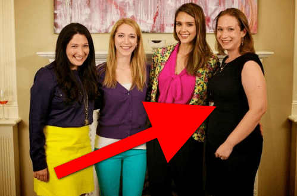

< < < Back
Mark Zuckerberg’s Sister And Other Feminist Typists Continue To Obsess Over Us – Return Of Kings
Roosh V, a “neomasculine” man with a poor imitation of a Duck Dynasty beard…
— Mark Zuckerberg’s sister, writing for Jezebel, indicating by attempted insult that she likes Roosh’s beard and probably wants the D, too.
With Donald Trump’s election win, feminists and other SJWs have been striving day and night to link us with the “big, bad, and racist” alt-right. And who do publications like Vox, New York Magazine, and Jezebel send to come after Return Of Kings and fawn over Roosh? Three extremely white women who would not fare especially well at all on ROK’s 1-10 scale.
Aja Romano, Claire Landsbaum, and Mark Zuckerberg’s sister wrote unsurprisingly train-wreck pieces about the dual convergence/non-convergence of the alt-right and its so-called “white supremacy” with gender red pillers. It seems that they are saying more about themselves and their own foibles, however, than Roosh, Quintus Curtius, Return Of Kings, the general manosphere, or anyone in the alt-right.
The women’s criticism of groups of men who challenge the orthodoxy of our sociopolitical landscape reads like a projection of their own feminine inadequacies and a craving for the male dominance and validation they claim to hate. Tell me a time when either Return Of Kings or the Roosh V Forum praised women like them.
The supreme irony, too, is that Zuckerberg’s brother created Facebook from an original concept called Facemash, which rated the attractiveness of Harvard girls and got the budding entrepreneur in hot water. This was all really no different to anything Return Of Kings currently does in rating women.

The Zuckerberg sister who is attacking us happens to be quite large.
For Mark Zuckerberg’s sister, red pill concepts like a woman’s value significantly depending on her fertility and beauty might hit a little closer to home than she wants to admit due to her obesity. It’s potentially why she has lashed out at Roosh, trying to go after his beard of all things but coming off as the girl who admires the man speaking his mind at great personal risk. When was the last time any romantic prospect in Mark Zuckerberg sister’s life said something that could get them into trouble?
She also has lashed out against ROK’s resident scholar, Quintus Curtius:
Predictably, Quintus Curtius has an extremely limited understanding of “how things were like in previous eras.” His stated goal is “to remind readers of the glories of leadership, character, and masculine virtue that can change their lives” — so of course, his understanding of antiquity is of a world inhabited by only a few extremely elite men. He has no sense of or interest in social history, cultural history, women, slaves, children, and broad historical trends. The ancient world is reduced to a textbook model for leadership, character, and masculine virtue.
Quintus recently responded to these accusations on his blog:
While you were bullying people for not adhering to your politically-correct ideology, I was starting a law firm, trying cases in court, fighting for the rights of the common man, and making an honest name for myself. This is the difference between you and me. While you are a spoiled child of privilege, I am a man who has earned his way through life through the sweat of his own brow.
His takedown strikes deeply into the soul of a woman who desperately wants to come out of her brother’s shadow, but is unlikely to ever do so.
How much is that ugly white girl in the window?
Aja Romano in particular referred to “male insecurity.” Yet she is actually insecure that Roosh and Return Of Kings believe—and actively promulgate—that men should not have to find women like her attractive:
Her appearance already inspired a meme:
I also find it rather galling that Romano is talking about the supposed insecurity of men interested in self-development and realist gender relations, not white supremacy, when she says things like this about herself on a Tumblr blog called “Nonmodernist”:
To be blunt, I am the physical embodiment of every negative stereotype about fat middle-aged single women in fandom and I carry a huge amount of fear and anxiety that I’m the wrong person to do this job–I’m not smart enough, I’m not pretty enough or fashion-savvy enough or accomplished enough, and who the hell anointed me a spokesperson for fandom, what did I do to earn that position?
Someone like Roosh is the ultimate turn-on (and nightmare) for Aja Romano because he a) finds her unattractive like most men, but b) more importantly, has faced constant social and even physical danger in publicly insisting that men should turn away from girls like her. He and others like him are the lighthouse that steers men away from the cliffs.
Romano ridiculously accused the proprietor of Return Of Kings of the “hate crime” of being familiar with Jonathan Swift’s A Modest Proposal for Preventing the Children of Poor People From Being a Burthen to Their Parents or Country, and for Making Them Beneficial to the Publick. This 1729 satirical piece was the inspiration for Roosh’s own satire about legalizing rape as a way of promoting female responsibility, such as by not getting yourself blind drunk every weekend so the 1-in-a-1,000 bad man can’t so easily take advantage of you on your way home.
Don’t worry, Claire-bear. In just over four weeks’ time, The Donald will be President.
Roosh has gotten Claire Landsbaum very sweaty, too. His and Donald Trump’s use of a 1-10 scale for rating women threatens the widespread pussy pedestalization that has helped her moderately get over the much greater attention the hot girls got from the boys in high school:
When Trump won, RooshV saw it as a victory for the PUA movement. “I’m in a state of exuberance that we now have a President who rates women on a 1-10 scale in the same way that we do and evaluates women by their appearance and feminine attitude,” he wrote. “We may have to institute a new feature called ‘Would Trump bang?’ to signify the importance of feminine beauty ideals that cultivate effort and class above sloth and vulgarity.”
But, of course, because Roosh had the audacity to read a non-mainstream, dissenting book like The Culture of Critique she calls him a member of the “racist” alt-right and part-Jewish guys like me or Jewish guys like Dawn Pine must be his loyal spin doctors. And an African-American Donovan Sharpe is somehow the modern-day Stephen from Django Unchained. Landsbaum is not so much confused as petrified. It is comparatively easy to label someone a “racist” when, in fact, their biggest—and sole—crime is essentially saying, “I would never ever fuck a girl who looks like you.”
Finally, Mark Zuckerberg’s sister sought to pillory Roosh for not disavowing Richard Spencer after he made a Roman salute before a crowd. So a target of her polemic needs to condemn a man for a mock hand gesture, while Zuckerberg can safely say last year for Jezebel that Amy Schumer made “a rape joke that works”? It’s a pity that, for all her experience with the Classics, she can’t hammer home and prove her points with the crispness of, say, Socrates and Glaucon in The Republic. Glaucon may not have fared as well as Socrates in their exchange on justice, but he made a much better fist of his argument than Zuckerberg has.
Where’s the diversity in the sorts of writers lusting over manosphere writers?

Diversity, SJW-style, at Huffington Post.
In addition to the issues about the writers’ projections of their own frustrations, there’s the question of their very narrow, privileged pedigrees. Zuckerberg and Landsbaum, for example, are both daughters from well-to-do white families, the former most of all. Zuckerberg’s father is a dentist and her mother a psychiatrist. On her website, Landsbaum references her father being a businessman obsessed with networking. Aja Romano’s background was less clear to me, yet even if it turns out she’s a troubled kid from the Bronx, there’s no doubting that the actively anti-Return Of Kings crowd overwhelmingly hail from the much better part of town.
It is a sign of the times that girls who grew up in much richer environments than ours are soliloquizing about how oppressive and bigoted it is that we talk to one another. If we cross-referenced your and my early social circles with Zuckerberg and Landsbaum’s, what do you think the result would be? I don’t know about you, but I remember a household where my parents never even had a mortgage on the home we lived in, let alone owned it outright, and family pets were nearly given up multiple times because we lacked the money to look after them anymore. And in the case of Zuckerberg, I’m only talking about the socioeconomic background created for her by her parents, not the familial fame that came with her brother’s founding of Facebook.
The mainstream media fears us
Reflect on the number of recent hit pieces directed not only at Roosh, Quintus, and Return Of Kings, but Donald Trump and anyone else who has railed against the political and gender status quo. They could not win the mainstream media the 2016 Presidential election for Hillary and these articles will certainly not win them back the legitimacy they lost so conclusively during the campaign.
Beneath the attempted take-downs rehearsed for months and the “confident” words that mask their personal inadequacies, SJWs and their general liberal enablers unconsciously realize that if we reach even more men, their days as narrative-crafters might be well and truly numbered. Moreover, many female journalists also know deep down that what Roosh and others say about women poses some uncomfortable truths regarding their own lives and how they themselves want men to value them.
Read More: This Is The Time To Support Return Of Kings